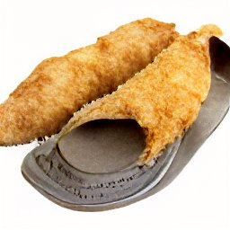

Fried Shoes

Description
You've seen deep fried butter, deep fried ice cream, and deep friend twinkies.
Logically, the next step is deep fried shoe.
Ingredients
- Oil
- Shoe
- Buttermilk
- AP Flour
Steps
- Heat oil to 350 F.
- Make batter with buttermilk and AP flour.
- Dip shoe in batter.
- Fry shoe in oil for 15 min.